직업상담사-2급 (2017-08-26 기출문제)
1과목: 직업상담학
1. 포괄적 직업상담에서 초기, 중간, 마지막 단계 중 중간 단계에서 주로 사용하는 접근법은?
- 발달적 접근법
- 정신역동적 접근법
- 내담자중심 접근법
- 행동주의적 접근법
(정답률: 65%)

2. Cottle의 원형검사시 세 가지 원을 그릴 때 원의 상대적 배치에 따른 시간관계성에 관한 설명으로 틀린 것은?
- 중복되지 않고 경계선에 접해 있는 원은 시간차원의 연결을 의미하며, 구별된 사건의 선형적 흐름을 뜻한다.
- 어떤 것도 접해 있지 않은 원은 시간차원의 완전성을 의미한다.
- 부분적으로 중첩된 원들은 시간차원의 연합을 나타낸다.
- 완전히 중첩된 원들은 시간차원의 통합을 의미한다.
(정답률: 80%)
3. 6개의 생각하는 모자(Six Thinking Hats) 기법에서 모자의 색상별 역할에 관한 설명으로 옳은 것은?
- 청색 – 낙관적이며, 모든 일이 잘 될 것이라고 생각한다.
- 적색 – 직관에 의존하고, 직감에 따라 행동한다.
- 흑색 – 본인과 직업들에 대한 사실들만을 고려한다.
- 황색 – 새로운 대안들을 찾으려 노력하고, 문제들을 다른 각도에서 바라본다.
(정답률: 79%)
4. 특성-요인 직업상담의 과정을 순서대로 바르게 나열한 것은?
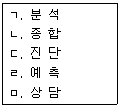
- ㄱ → ㄴ → ㄷ → ㄹ → ㅁ
- ㄷ → ㄱ → ㄴ → ㄹ → ㅁ
- ㄱ → ㄴ → ㄷ → ㅁ → ㄹ
- ㄱ → ㅁ → ㄷ → ㄹ → ㄴ
(정답률: 87%)
5. 제한된 기회 및 선택에 대한 견해를 갖고 있는 내담자들이 스스로 자신의 견해를 제한하기 위해 사용하는 방법이 아닌 것은?
- 예외를 인정하지 않는 것
- 불가능을 가정하는 것
- 어쩔 수 없음을 가정하는 것
- 공정한 세상을 인정하지 않는 것
(정답률: 75%)
6. 내담자중심 직업상담에서 Snyder가 제시한 상담자가 보일 수 있는 반응 중 다음은 어떤 반응에 해당하는가?
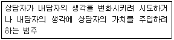
- 안내를 수반하는 범주
- 지시적 상담범주
- 감정에 대한 비지시적 상담범주
- 감정에 대한 준지시적 상담범주
(정답률: 72%)
7. 내담자중심 상담이론의 특징이 아닌 것은?
- 동일한 상담원리를 정상적인 상태에 있는 사람이나 정신적으로 부적응 상태에 있는 사람 모두에게 적용한다.
- 상담은 모든 건설적인 대인관계의 실제 사례 중 단지 하나에 불과하다.
- 실험에 기초한 귀납적인 접근방법이며 실험적 방법을 상담과정에 적용한다.
- 상담의 과정과 그 결과에 대한 연구조사를 통하여 개발되어 왔다.
(정답률: 72%)
8. 개인주의 상담에서 허구적 최종목적론에 관한 설명으로 틀린 것은?
- 인간의 행동을 유도하는 상상된 중심목표를 설명하기 위한 것이다.
- 허구나 이상이 현실을 보다 더 효과적으로 움직인다.
- 인간은 현실적으로 전혀 실현 불가능한 많은 가공적인 생각에 의해서 살아가고 있다.
- 인간의 행동은 미래에 대한 기대에 의해 좌우되기보다는 과거경험에 의해서 더 좌우된다.
(정답률: 75%)
9. 다음 설명에 해당하는 행동주의 상담기법은?
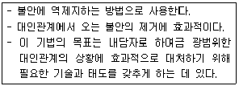
- 모델링
- 주장훈련
- 자기관리 프로그램
- 행동계약
(정답률: 65%)
10. 발달적 직업상담에서 직업정보가 갖추어야 할 조건이 아닌 것은?
- 부모와 개인의 직업적 수준과 그 차이, 그리고 그들의 적성, 흥미, 가치들 간의 관계
- 사회경제적 측면에서 수준별 직업의 유형 및 그러한 직업들의 특성
- 근로자의 이직시 직업의 이동 방형과 비율을 결정하는 요인에 대한 정보
- 특정 직업분야의 접근가능성과 개인의 적성, 가치관, 성격특성 등의 요인들 간의 관계
(정답률: 51%)
11. 직업상담의 문제유형에서 Williamson의 분류 중 ‘직업 무선택’에 해당하는 것은?
- 직업을 선택하기는 하였으나, 자신의 선택에 대해 자신감이 없고 타인으로부터 자기가 성공하리라는 위안을 받고자 추구하는 경우
- 내담자가 직접 직업을 결정한 경험이 없거나, 선호하는 몇 가지의 직업이 있음에도 불구하고 어느 것을 선택할지를 결정하지 못하는 경우
- 흥미를 느끼는 직업에 대해서 수행능력이 부족하거나, 적성에 맞는 직업에 대해서 흥미를 느끼지 못하는 경우
- 자신의 능력보다 훨씬 낮은 능력이 요구되는 직업을 선택하거나 안정된 직업만을 추구하는 경우
(정답률: 82%)
12. 직업상담시 흥미사정의 목적과 가장 거리가 먼 것은?
- 여가선호와 직업선호 구별하기
- 직업탐색 조장하기
- 직업·교육상 불만족 원인 규명하기
- 기술과 능력 범위 탐색하기
(정답률: 56%)
13. 직업상담의 목적과 가장 거리가 먼 것은?
- 내담자가 이미 잠정적으로 선택한 진로결정을 확고하게 해 주는 것이다.
- 개인의 직업목표를 명백하게 해 주는 과정이다.
- 내담자가 자기 자신과 직업세계에 대해 알지 못했던 사실을 발견하도록 도와주는 것이다.
- 내담자가 최대한 고소득 직업을 선택하도록 돕는 것이다.
(정답률: 89%)
14. 사이버 직업상담의 장점이 아닌 것은?
- 개인의 지위, 연령, 신분, 권력 등을 짐작할 수 있는 사회적 단서가 제공되지 않으므로 전달되는 내용 자체에 많은 주의를 기울이고 의미를 부여할 수 있다.
- 내담자의 자발적 참여로 상담이 진행되는 경우가 대면상담에 비해 압도적으로 많으므로 내담자들이 문제해결에 대한 동기가 높다고 할 수 있다.
- 내담자 자신의 정보가 제한되며 상담의 저항 같은 것에 영향을 받지 않아 상담을 쉽게 마무리할 수 있다.
- 상담자와 직접 얼굴을 마주하지 않기 때문에 자신의 행동이나 감정에 대한 즉각적인 판단이나 비판을 염려하지 않아도 된다.
(정답률: 65%)
15. 상담자의 윤리강령으로 옳지 않은 것은?
- 상담활동의 과정에서 소속기관 및 비전문인과 갈등이 있을 때 내담자의 복지를 우선적으로 고려한다.
- 타 전문인과 상호합의가 없었지만 내담자가 간절히 원하면 타 전문인으로부터 도움을 받고 있는 내담자라도 상담한다.
- 자신의 개인 문제 및 능력의 한계 때문에 도움을 주지 못하리라고 판단될 경우는 다른 전문가 동료 및 관련기관에 의뢰한다.
- 사회공익과 자기가 종사하는 전문직의 바람직한 이익을 위하여 최선을 다한다.
(정답률: 79%)
16. 생애진로사정 부분에서 전형적인 하루 동안 검토되어야 할 성격차원으로 옳은 것은?
- 수용적-회피적
- 경쟁적-협동적
- 의존적-독립적
- 내향적-외향적
(정답률: 85%)
17. 효과적인 집단상담을 위해 고려해야 할 사항이 아닌 것은?
- 집단발달 과정 자체를 촉진시켜 주기 위하여 의도적으로 게임을 활용할 수 있다.
- 매 회기가 끝난 후 각 집단 구성원에게 경험보고서를 쓰게 할 수 있다.
- 집단 내의 리더십을 확보하기 위해 집단상담자는 반드시 1인이어야 한다.
- 집단상담 장소는 가능하면 신체 활동이 자유로운 크기가 좋다.
(정답률: 87%)
18. 인지상담에서 주장하는 인지적 오류를 모두 고른 것은?
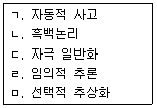
- ㄱ, ㄴ, ㄷ
- ㄱ, ㄴ, ㅁ
- ㄱ, ㄷ, ㄹ
- ㄴ, ㄹ, ㅁ
(정답률: 76%)
19. 정신역동적 직업상담에서 Bordin이 제시한 상담자의 반응범주에 해당하지 않는 것은?
- 소망-방어체계
- 비 교
- 명료화
- 진 단
(정답률: 78%)
20. 초기 면담의 주요 요소 중 내담자로 하여금 행동의 특정 측면을 검토해 보고 수정하게 하며 통제하도록 도전하게 하는 것은?
- 계 약
- 감정이입
- 리허설
- 직 면
(정답률: 65%)
2과목: 직업심리학
21. 어떤 검사가 측정하고 있는 것이 이론적으로 관련이 깊은 속성과는 실제로 높은 상관관계를 보이고, 관계가 없는 것과는 낮은 상관관계를 보이는 타당도는 어떤 것인가?
- 준거관련 타당도
- 동시타당도
- 수렴 및 변별 타당도
- 예언타당도
(정답률: 63%)
22. Wechsler 지능검사의 소검사 중 피검자의 상태에 따라 변동·손상되기 가장 쉬운 것은?
- 상 식
- 산 수
- 공통성
- 숫자 외우기
(정답률: 72%)
23. 다음 중 특성-요인이론에 관한 설명으로 가장 적합한 것은?
- 자신이 선택한 투자에 최대한의 보상을 받을 수 있는 직업을 선택한다.
- 개인적 흥미나 능력 등을 심리검사나 객관적 수단을 통해 밝혀낸다.
- 사회·문화적 환경 또는 사회구조와 같은 요인이 직업선택에 영향을 준다.
- 동기, 인성, 욕구와 같은 개인의 심리적 수단에 의해 직업을 선택한다.
(정답률: 66%)
24. Krumboltz의 사회학습이론에 관한 설명으로 틀린 것은?
- 진로결정에 영향을 미치는 요인으로 유전적 요인과 특별한 능력, 환경조건과 사건, 학습경험, 과제접근기술 등 4가지를 제시하고 있다.
- 강화이론, 고전적 행동주의이론, 인지적 정보처리이론에 기원을 두고 있다.
- 진로결정 요인들이 상호작용하여 자기관찰 일반화와 세계관 일반화를 형성한다.
- 학과 전환 등 진로의사결정과 관련된 개인의 행동에 대해서는 관심을 두지 않고 있다.
(정답률: 75%)
25. 사회인지 진로이론(SCCT ; Social Cognitive Career Theory)에 대한 설명으로 옳지 않은 것은?
- Bandura의 사회학습이론에 토대를 두며 환경, 개인적 요인, 행동 사이의 상호작용을 중시한다.
- 개인의 진로선택과 수행에 영향을 미치는 성(Gender)과 문화적 이슈 등에 민감하다.
- 개인의 사고와 인지는 기억과 신념, 선호, 자기지각에 영향을 미치며, 이는 진로발달 과정의 일부이다.
- 진로발달의 기본이 되는 핵심개념으로 자아효능감과 수행결과, 개인적 목표를 들고 있다.
(정답률: 39%)
26. 직업발달이론 중 Maslow의 욕구위계이론에 기초하여 유아기의 경험과 직업선택에 관한 5가지 가설을 수립한 학자는?
- Roe
- Gottfredson
- Holland
- Tuckman
(정답률: 80%)
27. 지능검사 점수와 학교에서의 성적 간의 상관계수가 0.50일 때, 이에 대한 설명으로 옳은 것은?
- 지능검사를 받은 학생들 중 50%가 높은 학교성적을 받을 것이다.
- 지능검사를 받은 학생들 중 25%가 높은 학교성적을 받을 것이다.
- 학교에서의 성적에 관한 변량의 25%가 지능검사에 의해 설명될 것이다.
- 학교에서의 성적에 관한 변량의 50%가 지능검사에 의해 설명될 것이다.
(정답률: 50%)
28. 직무분석을 위해 면접을 실시할 때 유의해야 할 사항이 아닌 것은?
- 면접대상자들의 상사를 통하여 대상자들에게 면접을 한다는 사실과 일정을 알려주도록 한다.
- 보다 정확한 정보를 얻기 위하여 응답자들이 가급적 “예” 또는 “아니요”로 답하도록 한다.
- 노사 간의 불만이나 갈등에 관한 주제에 어느 한쪽의 편을 들지 않는다.
- 작업자가 방금 한 이야기를 요약하거나 질문을 반복함으로써 작업자와의 대화가 끊기지 않도록 한다.
(정답률: 71%)
29. Ginzberg의 진로발달이론에서 잠정기(Tentative Period)의 하위단계가 아닌 것은?
- 능력기(Capacity Stage)
- 탐색기(Exploration Stage)
- 가치기(Value Stage)
- 전환기(Transition Stage)
(정답률: 54%)
30. 스트레스의 원인 중 역할갈등은 어디에 해당하는가?
- 직무 관련 스트레스원
- 개인 관련 스트레스원
- 조직 관련 스트레스원
- 물리적 환경 관련 스트레스원
(정답률: 60%)
31. A형 성격유형에 대한 설명과 가장 거리가 먼 것은?
- 시간의 절박감과 경쟁적 성취욕이 강하다.
- 관상동맥성 심장병(CHD)에 걸릴 확률이 높다.
- 비경쟁적 상황에서는 의외로 타인과의 경쟁심이나 적대감이 없다.
- 직무 스트레스의 주요 원천이다.
(정답률: 79%)
32. 직무 스트레스에 영향을 주는 요인에 관한 설명과 가장 거리가 먼 것은?
- B 성격유형의 사람들은 A 성격유형의 사람들보다 성취욕구와 포부수준이 더 높기 때문에 일로부터 스트레스를 느낄 가능성이 적다.
- 내적 통제자보다 외적 통제자들은 자신의 삶에서 중요한 사건들이 주로 타인이나 외부에 의해 결정된다고 보기 때문에 스트레스의 영향력을 감소시키려는 노력을 하지 않는 편이다.
- 스트레스 자체를 없애기는 어렵기 때문에 스트레스의 출처를 예측하는 것이 스트레스를 완화하는 데 중요한 역할을 한다.
- 사회적 지원은 스트레스의 출처를 약화시키지만 스트레스의 출처로부터 야기된 권태감, 직무 불만족 자체를 감소시키는 것은 아니다.
(정답률: 67%)
33. 다음 ( )에 알맞은 심리검사 용어는?
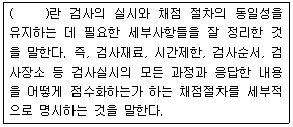
- 일반화
- 규준화
- 표준화
- 규격화
(정답률: 68%)
34. 검사의 구성타당도 분석방법으로 적합하지 않은 것은?
- 기대표 작성
- 확인적 요인분석
- 실험을 통한 집단 간 차이검증
- 유사한 특성을 측정하는 기존 검사와의 상관계수 분석
(정답률: 56%)
35. 직업발달이론에서 Parsons가 제안한 특성-요인이론의 핵심적인 가정은?
- 각 개인들은 객관적으로 측정될 수 있는 독특한 능력을 지니고 있으며, 이를 직업에서 요구하는 요인과 합리적인 추론을 통하여 매칭시키면 가장 좋은 선택이 된다.
- 분화와 통합의 과정을 거치면서 개인은 자아정체감을 형성해 가며, 이러한 자아정체감은 직업정체감의 형성에 중요한 기초요인이 된다.
- 진로발달 과정은 유전요인과 특별한 능력, 환경조건과 사건, 학습경험, 과제접근기술 등의 네 가지 요인과 관계가 있다.
- 초기의 경험이 개인이 선택한 직업에 대한 만족에 매우 중요한 요인이라고 강조하면서 개인의 성격유형과 직무환경의 성격을 여섯 가지 유형으로 구분하고 있다.
(정답률: 71%)
36. Seeman의 개념적 틀을 이용하여 Blauner가 규정한 비소외적 상태에 해당되지 않는 것은?
- 목 적
- 자유와 통제
- 사회적 통합
- 자기실현
(정답률: 45%)
37. 경력개발 단계를 성장, 탐색, 확립, 유지, 쇠퇴의 5단계로 구분한 학자는?
- Bordin
- Colby
- Super
- Parsons
(정답률: 79%)
38. 다음 중 인지능력을 평가하는 검사에 해당하는 것은?
- MMPI
- WAIS
- MBTI
- Big5
(정답률: 61%)
39. 직무분석의 의의에 대한 설명으로 틀린 것은?
- 조직 내에서 직무들의 상대적인 가치를 결정하는 것이다.
- 직무를 구성하고 있는 내용과 직무를 수행하기 위해 요구되는 조건을 밝히는 절차이다.
- 작업방법, 작업공정의 개선, 직업소개 등 다양한 목적으로 활용된다.
- 인사관리, 노무관리를 원활히 수행해 나가기 위해 필요한 정보를 획득하는 데 유용하다.
(정답률: 58%)
40. Lofquist와 Dawis의 직업적응이론에서 성격양식 차원에 관한 설명으로 틀린 것은?
- 민첩성 - 정확성보다는 속도를 중시한다.
- 역 량 – 근로자들의 평균 활동수준을 의미한다.
- 리 듬 – 활동에 대한 단일성을 의미한다.
- 지구력 – 다양한 활동수준의 기간을 의미한다.
(정답률: 78%)
3과목: 직업정보론
41. 국가기술자격의 검정기준 또는 응시요건에 대한 설명으로 옳은 것은?
- 기능사에 대한 응시자격은 고등학교 졸업 이상이다.
- 응시하려는 종목에 속하는 동일 및 유사 직무분야에서 3년 이상 실무에 종사한 사람은 기사 등급의 응시자격을 충족한다.
- 기술사 등급에 대한 검정기준은 ‘응시하고자 하는 종목에 관한 공학적 기술이론 지식을 가지고 설계, 시공, 분석 등의 기술업무를 수행할 수 있는 능력의 유무’이다.
- 기능사 등급에 대한 검정기준은 ‘응시하고자 하는 종목에 관한 숙련기능을 가지고 제작, 제조, 운전, 보수, 정비, 채취, 검사 또는 작업관리 및 이에 관련된 업무를 수행할 수 있는 능력의 유무’이다.
(정답률: 52%)
42. 다음은 한국표준직업분류(2007)의 어떤 직능 수준에 해당하는 설명인가?
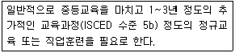
- 제1직능 수준
- 제2직능 수준
- 제3직능 수준
- 제4직능 수준
(정답률: 52%)
43. 고용정책 중 일자리 창출을 위한 정책과 가장 거리가 먼 것은?
- 고용유지지원금
- 실업크레딧 지원
- 시간선택제 전환 지원
- 사회적기업 육성
(정답률: 59%)
44. 한국표준직업분류(2007)에서 다음 중분류를 포괄하는 대분류에 해당하는 것은?
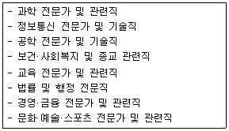
- 서비스 종사자
- 기술공 및 준전문가
- 전문가 및 관련 종사자
- 기능원 및 관련 기능 종사자
(정답률: 79%)
45. 직업정보로서 갖추어야 할 요건에 대한 설명으로 틀린 것은?
- 직업정보는 객관성이 담보되어야 한다.
- 직업정보 활용의 효율성 측면에서 이용대상자의 진로발달단계나 수준, 이용 목적에 적합한 직업정보를 개발하여 제공하는 것이 바람직하다.
- 우연히 획득되거나 출처가 불명확한 직업정보라도 내용이 풍부하다면 직업정보로서 가치가 있다고 판단한다.
- 직업정보는 개발 년도를 명시하여 부적절한 과거의 직업세계나 노동시장 정보가 구직자나 청소년에게 제공되지 않도록 하는 것이 바람직하다.
(정답률: 78%)
46. 제10차 한국표준산업분류(2017)의 개정 내용에 관한 설명으로 틀린 것은?
- 농업, 임업 및 어업 : 채소작물 재배업에 마늘, 딸기 작물 재배업을 포함하였으며, 어업에서 해면은 해수면으로 명칭을 변경하였다.
- 건설업 : 전문직별 공사업에서 2종 이상의 공사 내용으로 수행하는 개량·보수·보강공사를 시설물 유지관리 공사업으로 신설하였다.
- 도매 및 소매업 : 세분류에서 종이 원지, 판지, 종이상자 도매업과 면세점을 신설하였다.
- 숙박 및 음식점업 : 교육 프로그램을 중심으로 운영하는 숙박시설을 갖춘 청소년 수련시설을 교육 서비스업에서 숙박 및 음식점업으로 이동하였다.
(정답률: 75%)
47. 국가직무능력표준(NCS)에 관한 설명으로 틀린 것은?
- 산업현장에서 직무를 수행하기 위해 요구되는 지식·기술·태도 등의 내용을 국가가 체계화한 것이다.
- 한국고용직업분류를 중심으로 분류하였으며, 대분류→중분류→소분류→세분류 순으로 구성 되어 있다.
- 능력단위는 NCS 분류의 하위 단위로서 능력단위요소, 수행준거 등으로 구성되어 있다.
- 직무는 NCS 분류의 중분류를 의미하고, 원칙상 중분류 단위에서 표준이 개발된다.
(정답률: 52%)
48. 한국표준산업분류(2017)에서 생산단위의 활동형태에 관한 설명으로 틀린 것은?
- 모 생산단위의 생산품을 포장하기 위한 캔, 상자 및 유사제품의 생산은 보조단위로 본다.
- 주된 산업활동이란 산업활동이 복합형태로 이루어질 경우 생산된 재화 또는 제공된 서비스 중 부가가치(액)가 가장 큰 활동을 의미한다.
- 부차적 산업활동은 주된 산업활동 이외의 재화 생산 및 서비스 제공 활동을 의미한다.
- 보조활동에는 회계, 운송, 구매, 판매 촉진, 수리서비스 등이 포함된다.
(정답률: 55%)
49. 민간직업정보와 비교한 공공직업정보의 특성에 관한 설명과 가장 거리가 먼 것은?
- 필요한 시기에 최대한 활용되도록 한시적으로 신속하게 생산 및 운영된다.
- 광범위한 이용가능성에 따라 공공직업정보체계에 대한 직접적이며 객관적인 평가가 가능하다.
- 특정 분야 및 대상에 국한되지 않고 전체 산업 및 업종에 걸친 직종 등을 대상으로 한다.
- 직업별로 특정한 정보만을 강조하지 않고 보편적인 항목으로 이루어진 기초적인 직업정보 체계로 구성되어 있다.
(정답률: 77%)
50. 워크넷 직업·진로에서 제공하는 청소년 직업흥미검사의 하위척도가 아닌 것은?
- 활동척도
- 자신감척도
- 직업척도
- 가치관척도
(정답률: 56%)
51. 한국직업전망(2017)에 대한 설명으로 틀린 것은?
- 정량적, 정성적 분석을 통한 전망 결과를 현장전문가, 직업 및 고용전문가 등의 검증을 통해 최종 확정하였다.
- 고용 전망 결과는 향후 10년간의 연평균 고용증감률을 고려하여 6개 구간으로 나누어 제시하였다.
- 한국고용직업분류 24개의 중분류를 통합 또는 분할하여 17개 직군으로 재편하였다.
- 관련 정보처로서 직업정보와 관련된 정부부처, 공공기관, 학회 등의 기관명칭, 홈페이지 주소 등을 수록하였다.
(정답률: 52%)
52. 한국표준산업분류의 산업결정방법에 관한 설명으로 틀린 것은?
- 생산단위의 산업 활동은 그 생산단위가 수행하는 주된 산업 활동의 종류에 따라 결정된다.
- 계절에 따라 정기적으로 산업을 달리하는 사업체의 경우에는 조사시점에 경영하는 사업과는 관계없이 조사대상 기간 중 산출액이 많았던 활동에 의하여 분류된다.
- 단일사업체의 보조단위는 그 사업체의 일개 부서로 포함하지 않고 별도의 사업체로 처리한다.
- 휴업 중 또는 자산을 청산중인 사업체의 산업은 영업 중 또는 청산을 시작하기 이전의 산업활동에 의하여 결정하며, 설립 중인 사업체는 개시하는 산업활동에 따라 결정한다.
(정답률: 61%)
53. 직업정보를 제공하는 유형별 방식의 설명이다. ( )에 알맞은 것은?
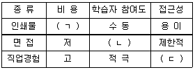
- ㄱ : 고, ㄴ : 적극, ㄷ : 용이
- ㄱ : 고, ㄴ : 수동, ㄷ : 제한적
- ㄱ : 저, ㄴ : 적극, ㄷ : 제한적
- ㄱ : 저, ㄴ : 수동, ㄷ : 용이
(정답률: 79%)
54. 다음 중 면접을 통한 직업정보 수집시 개방형 질문(Open-ended Questions)을 이용하기에 적합하지 못한 경우는?
- 응답자에 대한 사전지식의 부족으로 응답을 예측할 수 없는 경우
- 특정 행동에 대한 동기조성과 같은 깊이 있는 내용을 다루고자 하는 경우
- 숙련된 전문 면접자보다 자원봉사자에 의존하여 면접을 실시하는 경우
- 응답자들의 지식수준이 높아 면접자의 도움 없이 독자적으로 응답할 수 있는 경우
(정답률: 67%)
55. 한국직업사전에 수록되어 있는 정보 중 유사명칭에 대한 설명으로 틀린 것은?
- 직업 수 집계에서 제외된다.
- 본직업명을 명칭만 다르게 해서 부르는 것이다.
- 한국직업사전의 부가 직업정보에 해당한다.
- 본직업명을 직무의 범위, 대상 등에 따라 나눈 것이다.
(정답률: 51%)
56. 직업정보의 일반적인 정보관리순서로 가장 적합한 것은?
- 수집 - 분석 - 가공 - 체계화 - 제공 - 평가
- 수집 - 제공 - 분석 - 가공 - 평가 - 체계화
- 수집 - 분석 - 평가 - 가공 - 제공 - 체계화
- 수집 - 분석 - 체계화 - 제공 - 가공 - 평가
(정답률: 76%)
57. 다음 국가기술자격 종목이 공통으로 해당하는 직무분야는?
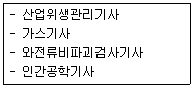
- 안전관리
- 환경·에너지
- 기 계
- 재 료
(정답률: 64%)
58. 다음 중 국가기술자격 종목에 해당하지 않는 것은?
- 임상심리사 2급
- 컨벤션기획사 2급
- 그린전동자동차기사
- 자동차관리사 2급
(정답률: 53%)
59. 다음 ( )에 알맞은 것은?(관련 규정 개정전 문제로 여기서는 기존 정답인 1번을 누르면 정답 처리됩니다. 자세한 내용은 해설을 참고하세요.)
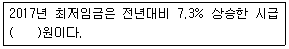
- 6,470
- 6,750
- 7,530
- 7,860
(정답률: 59%)
60. 워크넷에서 채용정보 검색 조건에 해당하지 않는 것은?
- 소정근로시간
- 고용형태
- 희망직종
- 희망임금
(정답률: 58%)
4과목: 노동시장론
61. 가계생산(Household Production)과 가계소비(Household Consumption)에 관한 설명으로 틀린 것은?
- 가계생산함수에서는 남편과 아내의 소비에 대한 효용이 결합적으로 도출된다고 가정한다.
- 가계생산함수에서는 가족들이 소비하는 재화의 많은 부분은 가족 내에서 생산된다고 가정한다.
- 기혼남성의 임금이 오를 경우 시간 집약적 상품의 소비를 줄이게 된다.
- 기혼여성의 임금이 오를 경우 생산과 소비 양면에서 소득효과가 발생한다.
(정답률: 44%)
62. 노동의 수요탄력성이 0.5이고 다른 조건이 일정할 때 임금이 5% 상승한다면 고용량의 변화는?
- 0.5% 감소한다.
- 2.5% 감소한다.
- 5% 감소한다.
- 5.5% 감소한다.
(정답률: 71%)
63. 다음 사례에 해당하는 것은?
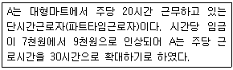
- 수요효과
- 공급효과
- 소득효과
- 대체효과
(정답률: 57%)
64. 임금-물가 악순환설, 지불능력설, 한계생산력설 등에 영향을 미친 임금결정이론은?
- 임금생존비설
- 임금철칙설
- 노동가치설
- 임금기금설
(정답률: 60%)
65. 다음 중 1차 노동시장의 특성과 가장 거리가 먼 것은?
- 고용의 안정성
- 승진기회의 평등
- 자유로운 직업 간 이동 보장
- 고임금
(정답률: 59%)
66. 노동조합을 다음과 같이 설명한 학자는?
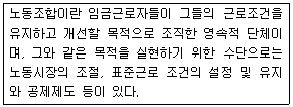
- S. Perlman
- L. Brentano
- F. Tannenbaum
- Sidney and Beatrice Webb
(정답률: 67%)
67. 다음 사례에서 기업의 채용 이유에 해당하는 것은?
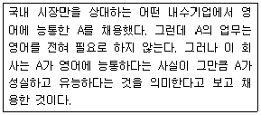
- 보상적 임금격차
- 임금경쟁원리
- 신호기능
- 효율임금
(정답률: 60%)
68. 경쟁노동시장 경제모형의 가정으로 틀린 것은?
- 모든 노동자는 동질적이다.
- 노동자의 단결조직과 사용자의 단결조직은 없다.
- 모든 직무의 공석은 내부노동시장을 통해서 채워진다.
- 노동자와 고용주는 완전정보를 갖는다.
(정답률: 51%)
69. 다음 중 직무급의 장점과 가정 거리가 먼 것은?
- 직무에 상응하는 임금지급이 가능하다.
- 직무가치의 객관성 확보가 가능하다.
- 배치전환이 용이하다.
- 능력위주의 인사관리가 가능하다.
(정답률: 54%)
70. 힉스(Hicks, J. R.)의 단체교섭이론에 관한 설명으로 틀린 것은?
- 파업기간이 길어질수록 사용자가 지불하려는 임금수준은 높아진다.
- 파업기간이 길어질수록 노조가 요구하는 임금수준은 낮아진다.
- 노동조합의 요구임금과 사용자측의 제의임금은 파업기간의 함수이다.
- 파업이 발생하기 이전의 교섭과정을 설명하는 이론이다.
(정답률: 60%)
71. 최저임금제도의 기대효과로 가장 거리가 먼 것은?
- 소득분배의 개선
- 공정경쟁의 확보
- 산업평화의 유지
- 실업의 해소
(정답률: 73%)
72. 이윤극대화를 추구하는 어떤 커피숍 종업원의 임금은 시간당 6,000원이고 커피 1잔의 가격은 3,000원일 때 이 종업원의 한계생산은?
- 커피 1잔
- 커피 2잔
- 커피 3잔
- 커피 4잔
(정답률: 77%)
73. 다음 중 전략적 파업의 원인과 가장 거리가 먼 것은?
- 미래의 단체교섭력 증진을 위해
- 조합원의 신뢰를 얻기 위해
- 조합원의 보다 많은 휴식을 위해
- 조합원의 응집력과 단결력을 훈련시키기 위해
(정답률: 70%)
74. 조합에 가입하고 있는 노동자만을 채용하고 일단 고용된 노동자라도 조합원 자격을 상실하면 종업원이 될 수 없는 숍 제도는?
- 클로즈드 숍(Closed Shop)
- 유니온 숍(Union Shop)
- 에이전시 숍(Agency Shop)
- 오픈 숍(Open Shop)
(정답률: 73%)
75. 다음 사례에서 기업의 해고에 대한 설명으로 옳은 것은? (단, 주어진 조건 외에는 고려 하지 않는다.)
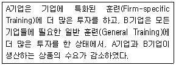
- A기업이 B기업보다 해고 가능성이 높다.
- B기업이 A기업보다 해고 가능성이 높다.
- A기업, B기업 모두 동일하게 해고시킨다.
- A기업, B기업 모두 동일하게 해고 가능성이 낮다.
(정답률: 69%)
76. 잠재적 실업에 관한 설명으로 가장 거리가 먼 것은?
- 노동의 한계생산물이 거의 0에 가까운 실업을 말한다.
- 표면적으로 취업상태에 있지만 실질적으로 실업상태에 있는 농촌의 과잉인구 등이 해당된다.
- 구직의 가능성이 높았더라면 노동시장에 참가하여 적어도 구직활동을 했을 사람이 그와 같은 전망이 없거나 낮다고 판단하여 비경제활동인구화 되어 있는 경우를 말한다.
- 불법체류 외국인 취업에 따른 실업이 해당된다.
(정답률: 61%)
77. 정보의 유통장애와 가장 관련이 높은 실업은?
- 마찰적 실업
- 경기적 실업
- 구조적 실업
- 잠재적 실업
(정답률: 72%)
78. 노사 간에 공동결정(Co-determination)이라는 광범위한 합의관행이 존재하고 있는 국가는?
- 영 국
- 프랑스
- 미 국
- 독 일
(정답률: 65%)
79. 다음 중 비수요부족실업이 아닌 것은?
- 마찰적 실업
- 경기적 실업
- 구조적 실업
- 계절적 실업
(정답률: 56%)
80. 효율임금정책이 높은 생산성을 가져오는 원인에 관한 설명으로 틀린 것은?
- 고임금은 노동자의 직장상실비용을 증대시켜서 작업 중에 태만하지 않게 한다.
- 고임금 지불기업은 그렇지 않은 기업에 비해 신규노동자의 훈련에 많은 비용을 지출한다.
- 고임금은 노동자의 기업에 대한 충성심과 귀속감을 증대시킨다.
- 고임금 지불기업은 신규채용시 지원노동자의 평균자질이 높아져 보다 양질의 노동자를 고용할 수 있다.
(정답률: 69%)
5과목: 노동관계법규
81. 직업안정법의 용어 정의로 틀린 것은?
- “고용서비스”란 구인자 또는 구직자에 대한 고용정보의 제공, 직업소개, 직업지도 또는 직업능력개발 등 고용을 지원하는 서비스를 말한다.
- “직업안정기관”이란 직업소개, 직업지도 등 직업안정업무를 수행하는 지방고용노동행정 기관을 말한다.
- “모집”이란 근로자를 고용하려는 자가 취업하려는 사람에게 피고용인이 되도록 권유하거나 다른 사람으로 하여금 권유하게 하는 것을 말한다.
- “근로자공급사업”이란 공급계약에 따라 근로자를 타인에게 사용하게 하는 사업을 말하는 것 으로서, 파견근로자보호 등에 관한 법률에 의한 근로자파견사업도 포함한다.
(정답률: 58%)
82. 다음 ( )에 알맞은 것은?
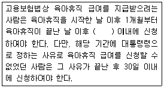
- 1개월
- 3개월
- 6개월
- 12개월
(정답률: 52%)
83. 근로자직업능력개발법상 훈련계약과 권리·의무에 관한 내용으로 틀린 것은?
- 사업주와 직업능력개발훈련을 받으려는 근로자는 직업능력개발훈련에 따른 권리·의무 등에 관하여 훈련계약을 체결할 수 있다.
- 사업주는 훈련계약을 체결할 때에는 해당 직업능력개발훈련을 받는 사람이 직업능력개발훈련을 이수한 후에 사업주가 지정하는 업무에 일정 기간 종사하도록 할 수 있다.
- 훈련계약을 체결하지 아니한 경우에 고용근로자가 받은 직업능력개발훈련에 대하여는 그 근로자가 근로를 제공하지 아니한 것으로 본다.
- 기준근로시간 외의 훈련시간에 대하여는 생산시설을 이용하거나 근무장소에서 하는 직업능력개발훈련의 경우를 제외하고는 연장근로와 야간근로에 해당하는 임금을 지급하지 아니 할 수 있다.
(정답률: 60%)
84. 근로자직업능력개발법상 직업능력개발훈련을 중요시하여야 하는 근로자의 범위에 해당 하는 자를 모두 고른 것은?
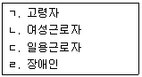
- ㄱ, ㄴ
- ㄱ, ㄷ
- ㄴ, ㄷ, ㄹ
- ㄱ, ㄴ, ㄷ, ㄹ
(정답률: 72%)
85. 헌법상 근로기본권에 관한 설명으로 틀린 것은?
- 국가는 사회적·경제적 방법으로 근로자의 고용의 증진과 적정임금의 보장에 노력하여야 한다.
- 국가는 법률이 정하는 바에 의하여 최저임금제를 시행하여야 한다.
- 국가유공자·상이군경 및 전몰군경의 유가족은 법률이 정하는 바에 의하여 우선적으로 근로의 기회를 부여받는다.
- 여자의 근로는 고용·임금 및 근로조건에 있어서 부당한 차별을 받지 아니하며 특별한 보호를 받지 아니한다.
(정답률: 75%)
86. 근로기준법상 취업규칙에 반드시 기재하여야 하는 사항이 아닌 것은?
- 업무의 시작시간
- 임금의 산정기간
- 근로자의 식비 부담
- 근로계약기간
(정답률: 49%)
87. 근로기준법상 평균임금에 의해 계산되는 것은?
- 야근근로수당
- 연장근로수당
- 휴업수당
- 휴일근로수당
(정답률: 63%)
88. 직업안정법령의 내용에 대한 설명으로 틀린 것은?
- 고용노동부장관이 유료직업소개사업의 요금을 결정하고자 하는 경우에는 고용정책기본법에 따른 고용정책심의회의 심의를 거쳐야 한다.
- 근로자공급사업 허가의 유효기간은 3년으로 한다.
- 국내 무료직업소개사업을 하고자 하는 자가 둘 이상의 시·군·구에 사업소를 두고자 하는 때에는 주된 사업소의 소재지를 관할하는 직업안정기관에 등록하여야 한다.
- 신문·잡지 기타 간행물에 구인을 가장하여 물품판매, 수강생 모집, 직업소개, 부업알선, 자금모금 등을 행하는 광고는 거짓 구인광고의 범위에 해당한다.
(정답률: 55%)
89. 고용상 연령차별금지 및 고령자고용촉진에 관한 법령에서 사용하는 용어의 정의로 틀린 것은?
- “고령자”란 55세 이상인 사람을 말한다.
- “근로자”란 근로기준법 제2조 제1항 제1호에 따른 근로자를 말한다.
- “사업주”란 근로기준법 제2조 제1항 제2호에 따른 사용자를 말한다.
- “준고령자”란 50세 이상 55세 미만인 사람을 말한다.
(정답률: 61%)
90. 고용정책기본법상 취업기회의 균등한 보장을 위한 차별 금지사유가 아닌 것은?
- 업무능력
- 병력(病歷)
- 출신학교
- 신 앙
(정답률: 66%)
91. 남녀고용평등과 일·가정 양립 지원에 관한 법령상 육아휴직에 관한 설명으로 틀린 것은?(관련 규정 개정전 문제로 여기서는 기존 정답인 2번을 누르면 정답 처리됩니다. 자세한 내용은 해설을 참고하세요.)
- 사업주는 육아휴직을 시작하려는 날의 전날까지 해당 사업에서 계속 근로한 기간이 1년 미만인 근로자에게는 육아휴직을 허용하지 않을 수 있다.
- 사업주는 육아휴직을 신청한 근로자에게 해당 자녀의 출생 등을 증명할 수 있는 서류의 제출을 요구할 수 없다.
- 근로자는 휴직종료예정일을 연기하려는 경우에는 한 번만 연기할 수 있다.
- 육아휴직을 신청한 근로자는 휴직개시예정일의 7일 전까지 사유를 밝혀 그 신청을 철회 할 수 있다.
(정답률: 73%)
92. 근로자퇴직급여보장법령상 퇴직급여제도에 관한 설명으로 옳은 것은?
- 사용자가 퇴직급여제도를 설정하지 아니한 경우 500만원 이하의 과태료가 부과된다.
- 근로자에게 주택구입 등 퇴직금 중간정산 사유가 있을 경우 사용자는 근로자의 요구가 없더라도 근로자의 퇴직 전 퇴직금 중간정산을 할 수 있다.
- 퇴직연금제도의 급여를 받을 권리는 어떠한 경우에도 양도하거나 담보로 제공할 수 없다.
- 사용자와 근로자와의 합의에 따라 소정근로시간을 1일 1시간 또는 1주 5시간 이상 변경하여 그 변경된 소정근로시간에 따라 근로자가 3개월 이상 계속 근로하기로 한 경우는 퇴직금 중간정산 사유에 해당한다.
(정답률: 39%)
93. 고용보험법상 실업급여에 관한 설명으로 틀린 것은?
- 구직급여는 실업급여와 취업촉진 수당으로 구분한다.
- 실업급여를 받을 권리는 양도하거나 담보로 제공할 수 없다.
- 실업급여수급계좌의 해당 금융기관은 고용보험법에 따른 실업급여만이 실업급여수급계좌에 입금되도록 관리하여야 한다.
- 조기재취업 수당, 직업능력개발 수당, 광역 구직활동비, 이주비는 취업촉진 수당의 종류이다.
(정답률: 52%)
94. 고용상 연령차별금지 및 고령자고용촉진에 관한 법률상 고령자 고용정보센터의 업무가 아닌 것은?
- 고령자에 대한 구인·구직 등록, 직업지도 및 취업알선
- 정년연장과 고령자 고용에 관한 인사·노무관리와 작업환경 개선 등에 관한 기술적 상담·교육 및 지도
- 고령자에 대한 직장 적응훈련 및 교육
- 고령자의 실업급여 지급
(정답률: 66%)
95. 고용정책기본법상 한국잡월드에 관한 설명으로 틀린 것은?
- 한국잡월드는 법인으로 한다.
- 한국잡월드는 사업수행에 필요한 경비를 조달하기 위하여 입장료·체험관람료 징수 및 광고등의 수익사업을 할 수 없다.
- 개인 또는 법인·단체는 한국잡월드의 사업을 지원하기 위하여 한국잡월드에 금전이나 현물, 그 밖의 재산을 출연 또는 기부할 수 있다.
- 정부는 한국잡월드의 설립 및 운영을 위하여 필요한 경우에는 국유재산법, 물품관리법에도 불구하고 국유재산 및 국유물품을 한국잡월드에 무상으로 대부 또는 사용하게 할 수 있다.
(정답률: 68%)
96. 남녀고용평등과 일·가정 양립 지원에 관한 법률상 남녀의 평등한 기회보장 및 대우에 관한 설명으로 옳은 것은?
- 사업주는 여성 근로자를 모집·채용할 때 그 직무의 수행에 필요한 경우라 하더라도 용모·키·체중 등의 신체적 조건을 제시하거나 요구하여서는 아니 된다.
- 사업주는 동일한 사업 내의 동일 가치 노동에 대하여는 동일한 임금을 지급하여야 하며, 동일 가치 노동의 기준은 직무 수행에서 요구되는 기술, 노력, 책임 및 작업 조건 등으로 한다.
- 사업주가 임금차별을 목적으로 설립하였더라도 별개의 사업은 동일한 사업으로 볼 수 없다.
- 사업주는 근로자의 해고에서 남녀를 차별하여서는 아니 되나 정년·퇴직의 경우 차별이 있더라도 남녀차별로 보지 아니한다.
(정답률: 60%)
97. 남녀고용평등과 일·가정 양립 지원에 관한 법률상 고용정책심의회의 심의를 거쳐야 하는 적극적 고용개선조치에 관한 사항이 아닌 것은?
- 여성 근로자 고충처리에 관한 사항
- 여성 근로자 고용기준에 관한 사항
- 적극적 고용개선조치 시행계획의 심사에 관한 사항
- 적극적 고용개선조치 이행실적의 평가에 관한 사항
(정답률: 61%)
98. 근로기준법상 근로자의 정의로 옳은 것은?
- 직업의 종류와 관계없이 임금을 목적으로 사업이나 사업장에 근로를 제공하는 자
- 직업의 종류와 관계없이 임금, 급료 기타 이에 준하는 수입에 의해 생활하는 자
- 사업주에게 고용된 자와 취업할 의사를 가진 자
- 사업주의 지휘감독 하에서 상시근로를 제공하고 그 대가로 임금형태의 금품을 지급받는 자
(정답률: 56%)
99. 헌법상 근로자의 노동3권에 해당하지 않는 것은?
- 단결권
- 단체교섭권
- 단체행동권
- 이익균점권
(정답률: 81%)
100. 근로자직업능력개발법상 직업능력개발훈련의 대상이 되는 근로자에 해당되는 자는?
- 학 생
- 전업주부
- 실업급여수급자
- 군 인
(정답률: 66%)